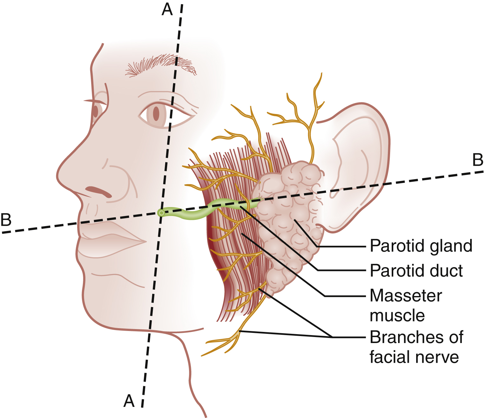
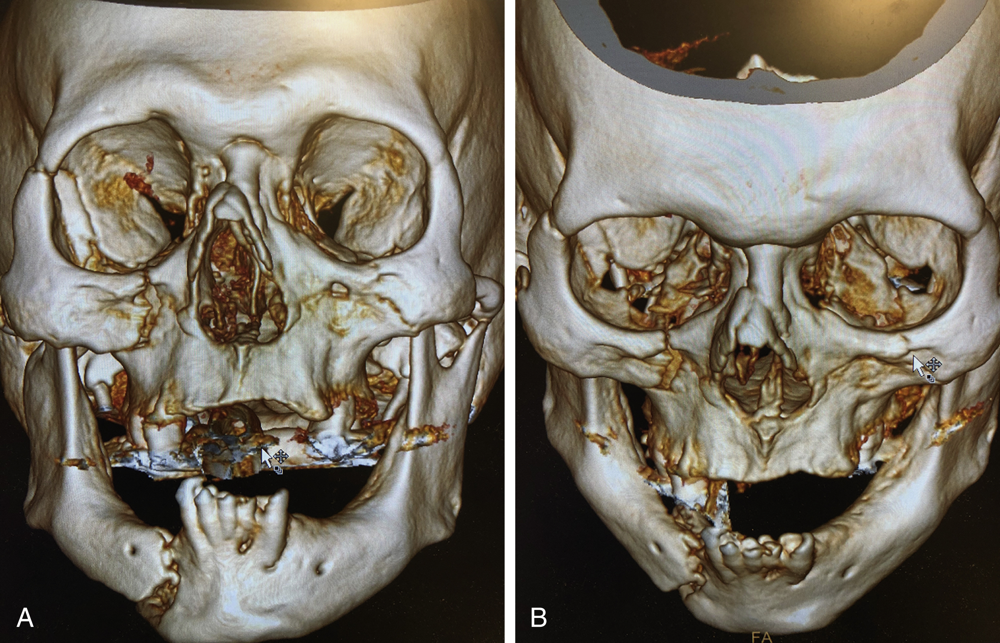
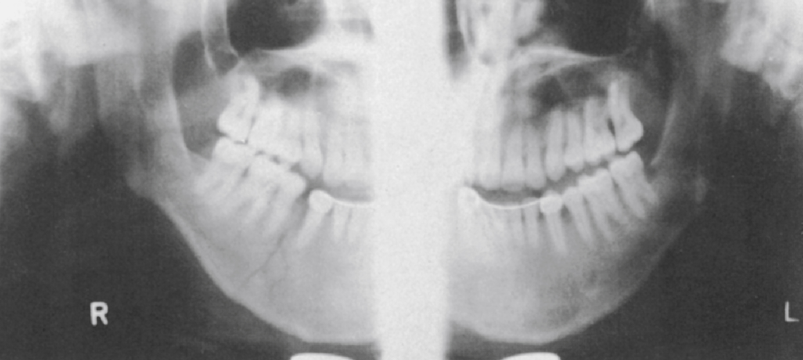

KEY CONCEPTS
- The face is central to the patient’s ability to breathe, eat, and communicate. Injuries to the face can have serious psychological and psychosocial consequences.
- Facial injuries may be prevented by the appropriate use of safety devices including motor vehicular seat belts, child restraints, air bags, helmets, and mouth and face guards.
- The epidemiology of facial injury is changing, with an increasing proportion of injuries occurring as a result of interpersonal violence. A careful history is required, and the possibility of abuse should be considered for every patient.
- Shock from facial trauma is rare and results only from obvious external bleeding. Facial injuries should not distract the emergency clinician from searching for other causes of shock.
- Assertive management of the airway is indicated in a patient with severe facial injuries. Surgical management (cricothyroidotomy) may be required, particularly with penetrating gunshot wounds.
- Directed facial CT scanning is the optimal imaging technique in patients with obvious injuries.
- Definitive facial treatment may be delayed, if necessary, to address other serious injuries.
FOUNDATIONS
Background and Importance
A complex structure vital to the function of the person, the face is comprised of airway openings, entry to the gastrointestinal tract, and special sensory organs, including the eyes, ears, and nose. Facial functioning is essential for eating, speaking, and effective nonverbal communication. The appearance and attractiveness of the face have significant implications for social interactions, sexual attraction, and self-esteem. Patients who have sustained facial trauma can experience long-term sequelae, including unemployment, drug and alcohol abuse, incarceration, marital difficulties, and negative body image.1,2
Apart from the immediate threat to the patient’s airway and special sense organs, injuries to the face can have serious implications for the patient’s mental health3 and future functioning.4 Posttraumatic patients with facial injuries often describe physical, financial, social, and psychological loss.1,5 Multiple studies have demonstrated an association between facial trauma and psychological symptoms such as anxiety, depression, and posttraumatic stress disorder. Several screening tools exist which can be useful in assessing a facial trauma patient’s psychological rehabilitation.1 Some institutions are establishing multidisciplinary evaluations regarding interventions, as well as initiating support groups and online resources for facial trauma patients.6,7
Although the emergency clinician’s first goal is to address life-threatening problems successfully, the care of facial injuries is aimed at optimizing the patient’s function and cosmetic appearance. Four main specialties—ophthalmology, plastic and reconstructive surgery, otolaryngology, and oral and maxillofacial surgery—participate in the care of facial injuries. Early consultation with the appropriate specialist can expedite the care of facial injuries.
Anatomy, Physiology, and Pathophysiology
The face is a complex space encapsulated by a bony structure overlaid with muscle and skin. It includes several special sensory organs—the eyes, ears, nose, and mouth.
Bones
The posterior portions of the face form the anterior wall of the calvaria, placing the face and its features in close proximity with the structures of the central nervous system. The anterior facial skeleton is composed of the frontal bone, nasal bones, zygomata, maxillary bones, and mandible (Fig. 1). The sphenoid, ethmoid, lacrimal, vomer, and temporal bones lie deep within the facial structure, providing support and important sites for muscular attachments, including the muscles of mastication, speech, and deglutition. This musculature complex is innervated by cranial nerves IX and X.
Fig 1: Bones of the facial skeleton.
Nerve Supply
The most anterior muscle layer includes the muscles of facial expression innervated by the seventh cranial nerve (CN), which lies just inferior to the external auditory canal. The trigeminal nerve (CN V) supplies sensation to the face through three major divisions (I–III). The ophthalmic division (CN V1) supplies the upper third of the face, including the eye and nose down to the tip. The maxillary division (CN V2) provides sensory innervation to the midface and includes the infraorbital nerve. The mandibular division (CN V3) supplies sensation to the lower third of the face.
Ears
The skeleton of the pinna is cartilage covered in closely apposed skin and rolled into a helical shape with a second ridge, the antihelix, defining the inner concha. The external auditory canal, middle ear, cochlea, semicircular canals, and superior origin of the eustachian tube all lie within the temporal bone.
Eyes
The bony orbit is composed superiorly of the frontal bone. The zygoma forms the lateral wall and lateral floor of the orbit. The medial floor and anteromedial wall are formed by the maxilla. The lacrimal and ethmoid bones complete the medial wall, where the orbit is at its most delicate juncture and vulnerable to injury. The medial wall of the orbit forms the lateral walls of the intranasal space.
Nose
The nose serves as a major entryway for air and is composed of cartilage and bone covered by skin, with mucosa lining the internal surface. Alar cartilage arches over the entrances to the symmetric, mucosa-lined nares, separated by the anterior cartilage of the septum. Superiorly, the nasal bones create the bridge of the nose. With the head held in a neutral upright position, the floor of the nose is perpendicular to the ground and leads back into the nasopharynx, passing the turbinates laterally and bony septum medially. The ethmoid bone lies superiorly and crosses midline, behind the nasal bridge, to form the superior portion of the bony nasal septum and cribriform plate. The vomer makes up the inferior portion of the bony septum, and the palatine process of the maxillary bone forms the posterior floor of the nose and hard palate.
Air-containing sinuses are structural features unique to the facial skeleton. They warm and humidify inhaled air and form chambers that create the unique tone of the human voice. These sinuses develop over the period of human growth. At birth, only the ethmoid air cells and mastoid antrum are aerated. The sphenoid sinus and remainder of the mastoid air cells become aerated at approximately age 3 years. Frontal sinuses form at approximately age 6 years, and maxillary sinuses are not fully developed until age 10 years.
Mouth
The mouth serves as an entryway for the respiratory and gastrointestinal tracts. With the mouth in the closed position, the tongue fills the oral cavity. Single rows of teeth lie within the alveolar ridges of the maxilla and mandible. With the mouth closed, the teeth in normal individuals occlude, with the lower row lying just internal to the upper row. The “usual” occlusion for individuals varies widely; the patient’s perception may be the best determinant of whether or not the teeth are meeting and approximating as usual. Anterior to the teeth is the vestibule, a fold of mucosa and flexible soft tissue that allows the lips to remain closed while various motor movements occur behind them. The mandible is a U-shaped bone that forms the chin and completes the lower facial skeleton. Containing the lower row of teeth, the body of the mandible meets in midline at the symphysis, which is completely fused by age 2 years. Posterior to the last molar, the bone turns to form the angle of the jaw and continues upward as the ramus of the mandible. At the most superior point of the ramus is the articular surface of the condyle, separated from the superior surface of the temporomandibular joint (TMJ) by an intervening meniscus of fibrocartilage. Anterior to the condyle lies a thin projection, the coronoid process, which provides the insertion point for the temporal muscle.
Temporomandibular Joint
The TMJ is complex, with the condyle of the mandible undergoing rotation and translation anteriorly during normal mouth opening. The function of the TMJ is preserved by a meniscus, which overlies the condyle. Essentially, the joint between the meniscus and condyle is a hinged joint, allowing rotation, and the joint between the meniscus and temporal bone is a sliding joint, allowing translation. A formal, thick joint capsule does not exist at the anteromedial portion of the joint; loose, relatively weak synovial tissue is positioned here to allow translation to occur.
Soft Tissue, Vasculature, and Specialized Glands
The skin of the face is among the thinnest of the body, draping over the underlying musculature. Facial skin falls visibly into predictable creases with age, following Langer’s lines (Fig. 2). At the mouth, nares, and palpebral fissures, the skin is contiguous with the mucosa lining these structures. The skin of the lips is particularly thin and lined with vascular papillae, which give the lips their vermilion hue. Lips are particularly important as part of communication; understanding their movement can allow language without sound (such as lip reading).
Fig 2: Langer lines—lines of facial expression.
The face is a highly vascular structure, which can have important implications for the treatment of facial injuries. With the exception of the ophthalmic artery, the superficial blood supply comes from the external carotid artery via the facial, superficial temporal, and maxillary arteries (Fig. 3). Soft tissue injuries and fractures that involve these vessels can lead to significant hematomas or exsanguinations. Because the face has extensive anastomotic connections across the midline and between arterial territories, however, ligation of major branches causes minimal ischemia.
Fig 3: Vessels of the face.
Adapted from Gray H. Gray’s anatomy . Philadelphia: Lea & Febiger; 1918.
Buried within the structure of the face are a series of glandular structures and ducts that are susceptible to injury. In the eye, the lacrimal glands lie within the orbits, superior and lateral to the globes, and secrete tears through ductules into the folds of the conjunctiva. The liquid flows medially into the puncta of the lacrimal canaliculi and drains into the lacrimal sac and then, via the nasolacrimal duct, into the nasopharynx.
The salivary system consists of the parotid, sublingual, and submandibular glands. The parotid is the largest of these glands, lying just anterior to the ear and wrapping around the mandible. The parotid is superficial to the masseter muscle and drains via the Stensen duct, a 5-cm tube that curves around the anterior edge of the masseter to enter the mouth opposite the second upper molar. In normal subjects, this duct is large enough to be palpated with the masseter clenched (Fig. 4). The sublingual glands lie entirely within the floor of the mouth and drain into the mouth via ductules. They surround the ducts draining the submandibular glands (Wharton ducts). The body of the submandibular gland is folded around the mylohyoid muscle so that a portion lies within the floor of the mouth and a portion lies external to it. The submandibular ducts run from the external portion of the gland to empty into the mouth on either side of the frenulum of the tongue.

Fig 4: Parotid gland and duct (Stensen), with the surrounding branches of the facial nerve. Line B approximates the course of the duct, which enters the mouth at the junction of lines A and B.
Pathophysiology
The basic mechanism of all injury is the transfer of energy, most often kinetic, to the structures of the body. When the energy overcomes the tolerance of the underlying tissue, injury results. Trauma traditionally has been classified as blunt or penetrating, but in many cases the effect is a combination of the two, such as the forehead injury (contusion and complex laceration) resulting from a child’s fall against the sharp corner of a coffee table. The likelihood of injury is related to the amount of energy transferred and condition of the underlying tissue. Significant injury may result when an 80-year-old falls from standing to a carpeted floor, but it is more likely to result when the face strikes the steering wheel or dashboard in a high-speed motor vehicle collision (MVC).
The mechanism can be broken down into low-energy events, such as a fall from standing or walking into the corner of a piece of furniture, and high-energy events, such as an MVC. Understanding the mechanism of injury can help predict not only the severity of the facial injury but also the risk of associated cervical or brain injuries.8 The face does little to protect the brain from traumatic injury. The incidence of traumatic brain injuries (TBI) in facial fractures has been reported to be anywhere between 11% to 80%.9 Multiple studies have looked at predictive exam findings including Glasgow Coma Scale score less than 8 with loss of consciousness and fracture location site (upper versus midface) to demonstrate a positive correlation between TBI and facial fracture. Recent studies have suggested a significant increase in risk for brain injury among severe trauma patients with multiple facial fractures. 101112 In addition, a recent review of over 20,000 trauma patients found that subjects with midface fractures are 2.4 times more likely to have a cervical spine injury (CSI) than patients without.13,14 Cervical spine and brain injuries should be considered based on the trauma mechanism and presentation of the patient without allowing the presence or absence of a facial injury to change the level of suspicion.15,16
Penetrating trauma to the face from gunshots, stab wounds, blast debris, or impalement is often obvious and dramatic (Fig. 5). The emergency clinician should consider and search for associated intracranial, spinal, or vascular injuries, which are common in these cases.17 Facial penetration from pellets (BBs) or small blast debris or shrapnel may be less obvious, and the face should be examined for these more subtle injuries. Nonlethal devices for recreation use or use by law enforcement with alternative ammunition (e.g., rubber bullets) can have substantial kinetic energy leading to significant facial and upper body trauma.18
Fig 5: Impalement by a turn signal lever. Computed tomography (CT) scan (A) and three-dimensional reconstruction (B) from a patient impaled through the face into the cranial cavity by the turn signal lever from his steering column when his vehicle rolled over in a single-car crash. The color three-dimensional reconstruction reveals a significant injury to the facial artery (arrow).
Clinical Features
History
The history can provide information about the mechanism of the patient’s facial injury. The history, however, may be limited in cases in which the patient’s consciousness is altered by a head injury or intoxication, or under circumstances of secondary gain, involvement of law enforcement or suspicion of abuse. Patients with a clear sensorium are able to describe the events leading up to the injury and localize pain, deficits in motor or sensory function, and abnormalities of vision, hearing, taste, or smell. Although the association between facial trauma and brain or cervical spine injury has been debated, these possibilities should be considered, and the patient should be questioned regarding headache, peripheral weakness, numbness or paresthesias.
Physical Examination
Many facial injuries can be identified by simple inspection. During the primary assessment, an essential first step is attention to the patient’s airway and inspection of the oropharynx. Airway compromise is often a result of intraoral trauma, and the examiner should note excessive bleeding, drooling, dysphonia, swelling of the tongue or posterior pharynx, and presence of avulsed teeth. When the patient is stabilized, a secondary survey should include a systematic examination of all facial structures and functions. Bony prominences should be palpated for abnormal motion, bony crepitus, tenderness, or step-off. Tenderness and massive swelling associated with facial trauma may preclude reliable palpation of a fracture. Consequently, areas of significant swelling should be imaged radiographically. Assessment of bony integrity includes testing for a possible Le Fort fracture. The upper incisors are grasped and pulled anteriorly. Movement of the upper alveolar ridge (LeFort type I), midface (type II), or entire face (type III) indicates a fracture (Fig. 6 and Fig. 7). Wounds may need to be palpated for underlying bony injury or foreign objects; anesthesia may be required for a thorough examination within the wound. Complex lacerations involving the cartilage of the nose or ear, eyelids, lacrimal apparatus, eyebrows, or vermilion border of the lips should be identified because their repair often requires advanced reconstructive surgical techniques.
Fig 6: Le Fort classification. Le Fort type 1 is shaded in red, Le Fort type II is shaded in green, and Le Fort type III is shaded in blue.

Fig 7: 3-D imaging of Le Fort injuries.
Eyes and orbits
In addition to the examination of lacerations and contusions, the face should be evaluated for symmetry. The appearance of the zygomata may be evaluated by looking at the patient from above. This technique also draws attention to the relative position of the eyeballs. Orbital fractures may result in enophthalmos, and a large retrobulbar hematoma (Fig. 8) may cause exophthalmos. The anterior chamber of the globe should be inspected for hyphema or globe rupture. A complete examination of the eye requires specific testing. If the patient is able to cooperate, visual acuity should be documented. Contact lenses should be removed. In the event of a significant potential chemical exposure, the involved eye should be rapidly irrigated with saline or tap water and the pH of the residual eye fluid measured. Fluorescein examination of the eye should be performed if there is any concern for a corneal abrasion. Victims of MVCs often have particles of glass in the conjunctiva or on the cornea, and these should be sought and removed. Extraocular motions should be tested. Blow-out fractures of the orbit may result in diplopia on upward gaze, secondary to entrapment of the inferior rectus muscle or anesthesia of the midface and upper lip in the distribution of the second division of the CN V. This often is secondary to neurapraxia resulting from a fracture through the infraorbital foramen or compression by a local hematoma (Fig. 9).
Fig 8: Retrobulbar hematoma.
From Nickson C, Bashed, blind, and bulging. Available at: http://lifeinthefastlane.com/ophthalmology-befuddler-033-2
Fig 9: Blow-out fracture. (A) Periorbital swelling and ecchymosis with an eyebrow laceration related to a blow-out fracture. (B) CT scan of a blow-out fracture.
Oropharynx
The integrity of the mouth and nasal complex may be evaluated by listening to the patient’s speech. A muffled or hoarse voice may indicate occlusion of the nose or nasopharynx, whereas dysarthria may indicate a mandibular fracture, tongue injury, or neurologic problem. Oral injury may result in progressive airway compromise, and dysphonia should alert the emergency clinician to the possible need for active airway management. The intraoral examination includes inspection of the palate, teeth, tongue, and gums and palpation with a gloved finger—the latter only if the patient is able to cooperate with the exam. The range of motion of the mandible should be determined. If the maximal incisor opening is less than 5 cm, a mandibular fracture may be present. Trismus is likely to indicate a fracture or significant hematoma within the face. If awake, the patient’s impression about the normalcy of bite occlusion is a more sensitive determinant of a fracture of the mandible than the emergency clinician’s clinical impression. Being able to perform a tongue blade test (grasping and holding a tongue blade between the teeth while the examiner pulls gently) is associated with a greatly reduced probability of mandibular fracture. If the patient is able to crack the tongue blade by biting on both sides of the mouth, studies have demonstrated the negative predictive value for a mandibular fracture is about 95%. 19 Injury to the parotid area should raise suspicion of disruption of the Stensen duct. The opening of the duct opposite the second upper molar should be examined for bleeding while the gland is compressed. If blood is expressed from the duct or the severed ends of the duct are identified within a facial wound, specialized repair over a stent is often required to prevent formation of a cutaneous fistula.
Ears
Otoscopy is performed to evaluate the integrity of the external canal, look for hemotympanum, and assess for otorrhea. Subcutaneous hematomas of the ear (Fig. 10) will require drainage. Clear fluid from the ear after trauma should raise the possibility of a cerebrospinal fluid (CSF) leak and basilar skull fracture. At the bedside, a drop of the fluid may be placed onto filter paper to demonstrate the halo or double ring sign where a rapidly advancing halo of clear fluid around red blood defines a positive test result (Fig. 11). This quick bedside test has a sensitivity above 85% when concentrations of blood products and other fluids are relatively equivalent, but does not differentiate between CSF and saline, saliva, or other clear fluids. Leaks can also be detected easily by β 2 -transferrin electrophoretic examination, high-resolution computer tomography (HRCT), magnetic resonance cisternography with contrast, and surgical exploration; however, these methods can be timely, costly, or invasive.20,21
Fig 10: Auricular hematoma. (From Hanna P. Top 7 worst cauliflower ears in MMA history. Available at: www.fightofthenight.com/articles/top-5-worst-cauliflower-ears-in-mma-history)

Fig 11: Halo sign seen in CSF leak.
Nose
The nose is palpated for tenderness, crepitus, or abnormal movement; then each naris is held closed in turn to ensure that the patient is able to breathe through either side. The septum should be examined visually for the presence of a septal hematoma (Fig. 12), which appears as a large purple mass extending from the septum. If there is any concern about CSF rhinorrhea, the aforementioned diagnostic filter test may be performed.
Fig 12: Septal hematoma.
Neurologic Examination
Light touch should be tested for all three branches of CN V. Motor function (CN VII) can be examined by having the patient actively wrinkle the forehead, fully open and close the eyelids, smile widely, and bare teeth. Asymmetry of these movements indicates a potential nerve injury. Peripheral injuries to CN VII should cause discernible weakness in the forehead as well as the orbital and oral musculature, whereas central injuries will result in preserved forehead function because of crossing fibers distal in the course of the nerve. In an altered or uncooperative patient, CN V (the ophthalmic branch of the trigeminal nerve) and CN VII can be quickly assessed by testing the corneal reflex.
DIFFERENTIAL DIAGNOSES BASED ON ANATOMIC SITES
Soft Tissue Injuries and Lacerations
Soft tissue injuries to the face present an acute cosmetic concern for the patient. Areas of injury may be contused, lacerated, or abraded. When cleaned of any debris, abrasions may be covered in a thin layer of antibiotic ointment and left exposed or covered. Patients with significant debris tattooing will benefit from topical lidocaine for anesthesia before vigorous scrubbing to remove embedded material. A delay in the removal of embedded material will result in further injury due to epithelialization. The patient should be cautioned to anticipate the development of periorbital swelling or ecchymosis over time, if contusions involve the brow, forehead, or bridge of the nose (Fig. 13). Head elevation and use of cold compresses may limit the degree of swelling and bruising.
Fig 13: Facial Contusion.
(A) Day 1 with small abrasion and ecchymosis. (B) Day 3 development of periorbital swelling and ecchymosis secondary to gravity. (C) Day 7 continued progression while healing.
Cosmesis is a priority for patients with facial lacerations and they may request facial specialty services for even minor wounds. Depending upon the size, shape, depth and location of the wound and the commitment of time dedicated to repair, consultation or referral to consultants (otolaryngology or plastic reconstructive surgery) may be appropriate if available. Children and patients with behavioral problems may require sedation to allow sufficient control for a cosmetic repair. Repair of facial wounds in uncooperative patients who are acutely intoxicated may be delayed until they are clinically sober enough to cooperate for the procedure.
The general principles and approach to wound management can be referred to here. Facial wounds should be explored for depth, foreign bodies, and underlying fractures, after appropriate anesthesia has been achieved. Field or facial nerve blocks can be used to minimize local distortion of wound edges. Irrigation may not be necessary in simple, clean facial wounds closed within 6 hours. For nongaping wounds smaller than 3 cm, a single-layer closure may be sufficient. For gaping wounds deeper than the dermis, subcuticular buried sutures of absorbable materials should be placed to close any potential space and relieve any tension on the skin. For simple skin closure, tissue adhesive is faster, less painful, results in equally effective cosmetic results in adults and children, and can be used to close the skin over deeper sutures. Tissue adhesive use is contraindicated to repair complicated wounds (stellate lacerations), animal bites, mucosal surfaces, or across mucocutaneous junctions or high tension areas. Compared with sutures, tissue adhesive has the additional benefit of not requiring later removal, but care must be taken not to glue the eye, nares, or mouth closed unintentionally.22,23
Antibiotic therapy use in the management of facial injuries continues to be debated and is highly variable in clinical practice. Given the increasing concerns for antibiotic resistance, minimizing infectious complications, and concern for rising health care expenses, attention has turned to appropriate antibiotic stewardship. Antibiotics are not required for simple facial wounds, which rarely become infected, and are best managed with copious irrigation and careful débridement. Bite wounds, wounds with any evidence of devascularization, wounds through and through the buccal mucosa, wounds involving the cartilage of the ear or nose, wounds with extensive contamination, and the immunocompromised patient are exceptions to this rule. Antibiotics should be selected on the normal bacterial flora that is associated with the affected area.24–26
Mouth
Lip lacerations are common and require special consideration to maintain the appearance of the lip edge or vermilion border and natural architecture of the philtrum. Because infiltration of even a small volume of local anesthetic may distort and blanch the soft tissue, marking the vermilion border (with nonpermanent ink) before anesthesia facilitates a cosmetic repair. To minimize any divots and maximize cosmesis and function, wounds that include the muscular layer should be closed in multiple layers. Skin may be closed with nylon or other nonabsorbable sutures; the lip and mucosa should be closed with absorbable sutures. Lip lacerations are not amenable to closure with wound adhesives.
Through-and-through lacerations of the mouth should be closed in layers, beginning with the intraoral mucosa and working outward in layers toward the skin. After closure of the mucosal layer, copious irrigation of the external wound is indicated to remove lingering bacteria that otherwise might be incorporated into the wound. Prophylactic treatment with penicillin has been shown to decrease the risk of infection after significant through-and-through lacerations. Lacerations that approach the parotid (Stensen) or submandibular (Wharton) duct should be evaluated before intervention for ductal integrity. Saliva milked from the gland should be thin and clear and exit the duct readily. If a duct is involved or there is any doubt, a facial specialist should be consulted for evaluation and repair.27
Small lacerations of the tongue or oral mucosa do not require repair. Lacerations that gape (including deep tongue lacerations), collect food, and are likely to heal with a significant divot or thick scar that may hinder eating and speaking functions require repair. Deep or gaping lacerations of the tongue or oral mucosa should be closed (in layers, if necessary) with absorbable sutures that do not require removal. To facilitate repair, an assistant may be needed to expose the laceration by grasping the tongue between gauze and holding a segment outside the mouth. Some advocate placing a thick temporary suture through the distal tongue (after appropriate anesthesia) to facilitate this exposure. Discharge instructions for intraoral lacerations, whether or not they are repaired, should include gentle cleansing (swish and spit) with a mild antiseptic.
Cheeks
Contusions of the cheek should raise concern for an underlying zygomatic or maxillary fracture. Lacerations of the lateral cheek may involve the parotid gland or Stensen duct. Failure to identify and repair ductal injury results in retention of salivary fluid and enlargement of the gland or formation of a cutaneous fistula. Lacerations in the area anterior to the tragus may include injury to the facial nerve, and a careful neurologic examination should be carried out before closure. Langer lines change from mostly horizontal in the superior cheek to diagonal at the nasolabial fold, then curve convexly around the mouth; these changes should be taken into consideration when débridement is required as part of a complex laceration repair.
Nose
Because of its anterior position, soft tissue injuries to the nose are common. Almost any nasal trauma can result in epistaxis. In general, epistaxis is controllable by pinching the cartilaginous anterior nose closed between two fingers and holding compression for approximately 10 minutes. If it is not controlled, anterior packing is indicated. Intranasal inspection is required with nasal injuries to assess for a septal hematoma, which appears as a dark purple or bluish mass against the septum. Hematomas require drainage because they are associated with necrosis of the septum if left untreated. Simple incision and expression of the clot followed by anterior packing are sufficient. Traditional teaching has been that any patient with nasal packing should receive prophylactic antibiotics to cover Staphylococcus and Streptococcus spp. to prevent sinusitis and toxic shock syndrome. Toxic shock syndrome is a rare but measurable complication of postoperative nasal packing; however, the incidence with primary packing is unclear. There is no evidence that prophylactic antibiotics change this infectious risk. Although there is limited data, systemic prophylactic antibiotics have shown no benefit with nasal packing and are unnecessary.28 A topical antibiotic, such as chlorhexidine-neomycin (Naseptin), can be used and is a more cost-effective alternative.
Because of the location and structure of the nasal bridge, fractures of the thin bones of this area are common. Patients with contusion or tenderness over the bridge of the nose may be assumed to have a fracture of the nasal bones. If the nose is acceptably straight on initial evaluation, there is no septal hematoma, epistaxis is controlled, and the patient is able to breathe out of each naris, no further evaluation is required emergently for isolated nasal injuries. Dedicated radiographs of nasal bones have little clinical value.
Swelling over the bridge often precludes determination of the acceptability of the appearance at the time of injury. The patient may be provided with a referral for outpatient specialty follow-up in 3 to 5 days if the appearance at that time, when the swelling has subsided, is still unacceptable. In a series of surgically repaired simple nasal bone fractures, septal fractures were present in more than 50% of cases. CT scanning does not provide any advantage in diagnosing septal fractures and should be reserved for evaluating patients suspected of having other, more complex fractures.29
Children with nasal fractures may have premature closure of sutures and uneven growth, particularly of the vomeroseptal line. In a child, no imaging studies are indicated for isolated nasal injuries, but a consultant should evaluate swelling and tenderness over the nose, preferably within 3 days with a repeat examination in 7 days once the area of swelling has decreased.30,31
Simple lacerations of the nasal skin may be closed with sutures or tissue adhesive. If needed, anesthesia may be achieved with a nerve block of the infraorbital or supratrochlear nerves. The large pores typically present in the area of the nasal ala increase the likelihood of stitch abscesses after laceration closure in this area. Closure with an absorbable running subcuticular suture may limit the risk of this outcome. If involved, the cartilaginous portions of the ala should be closed in a separate layer with absorbable 4-0 sutures. For lacerations through and through the nose, repair should be carried out from the mucosal layer outward, with copious saline solution irrigation between layers.
Ears
Blunt trauma to the ear may cause hematoma formation in the subperichondrial potential space. Such hematomas are the prelude to the development of a so-called “cauliflower ear” and should be drained by aspiration. Re-accumulation of the hematoma is prevented with a compressive dressing of the ear, but reexamination by a specialist is crucial, and re-aspiration should be performed as necessary.
Ear lacerations often involve the cartilage. The ear may be anesthetized with a field block; 1% lidocaine without epinephrine can be used as a local anesthetic for direct infiltration of the ear. 1% lidocaine with epinephrine can be utilized for a regional block. Simple skin wounds may be closed in a single layer. Lacerations to the underlying cartilage should be repaired with absorbable material. If there is significant degloving or loss of overlying tissue, a facial specialist should be consulted. Portions of aural cartilage may be saved temporarily in a distant dermal pocket for later reconstruction. Because cartilage is avascular, chondritis, when it occurs, requires extensive débridement and is disfiguring. No randomized trials have been performed, but when the cartilage of the pinna requires repair, antibiotic prophylaxis covering typical skin flora as well as Pseudomonas is recommended. Compressive ear dressings (splints) are indicated after any significant repair. Ear injuries occurring before age 1 year or injuries to both ears in children are less common and should raise the suspicion of abuse.32
Eyes
Simple eyelid lacerations may be repaired in a single layer. Wound adhesives should be used with caution anywhere near the eye; care must be taken not to glue the eyelids open or shut. Lacerations that involve deeper structures, loss of tissue, or the lid margin should be referred to a consultant. The integrity of the lacrimal apparatus can be assessed by instilling fluorescein into the eye and assessing for dye in the wound. A facial consultant should repair any injury to the sac or lacrimal duct.33
Eyebrow lacerations are common because of the overhanging supraorbital ridge. Careful wound exploration should be performed to assess the integrity of the underlying bony structure. No shaving should be performed because the brow hairs may not regrow, and the hairs are necessary for realignment. If débridement is required, it should be done parallel to the hair follicles (skived) rather than perpendicular to the skin. This approach minimizes the bald area of the scar. Closing the deeper muscular layers preserves the normal expressive function of the brow. Injuries to the globe are further discussed here.
Fractures and Dislocations
For the emergency clinician, the key to facial fractures is accurate diagnosis and appropriate referral. Many nondisplaced or minimally displaced facial fractures may be managed on an outpatient basis, with definitive repair or fixation delayed several days. In adults, fractures develop firm fibrous union within approximately 10 to 14 days; however, definitive repair is performed most easily before day 7. Facial fractures in young children are relatively rare and may be incomplete or greenstick fractures. Fibrous union in these cases is rapid; early reduction (within 3 days) is recommended.
Broad-spectrum antibiotics treating sinus and nasal pathogens are indicated for open fractures and fractures that violate a sinus. Patients with fractures through the nasoethmoid (NOE) complex that violate the maxillary bones or floor of the orbit should be cautioned to avoid sneezing and blowing the nose because these activities force air out into the soft tissues of the face.
Surgical repair of simple nasal fractures may be performed closed and the nose splinted internally or packed. Repair of fractures of the floor of the orbit, when necessary, may require the placement of a silicone patch to occlude the opening into the maxillary sinus. Operative repair of most other fractures of the face is performed with the use of small metal plates (microplates), screws, or wires to stabilize fragments by attaching them to unbroken segments of bone and if possible, reconstructive efforts are made to preserve facial symmetry. Complex facial fractures may have to be repaired in a staged fashion, depending on the patient’s degree of injury and amount and quality of the bone remaining (Fig. 14). Much of this surgery is best accomplished when the fragments are still freely mobile but initial swelling has been reduced, on postinjury days 3 to 5.
Fig 14:
3-D CT image of partial repair of a GSW with microplates.
Forehead
Fractures through the superior forehead may occur above the level of the frontal sinus and represent skull fractures rather than facial fractures and should be addressed with special attention to risk of injury to the underlying brain. Unlike other skull fractures, frontal skull fractures often require repair for cosmesis alone. More often, fractures in this area involve the anterior portion of the frontal sinus. If even minimally displaced, these fractures require elevation for cosmesis. Fractures through the anterior wall of the frontal sinus are likely to continue through the posterior wall, and CT scanning should be performed to assess for this complication; if present, a CSF leak should be assumed until proved otherwise. CSF leaks into the frontal sinus may also manifest in a delayed manner, days or years after the initial injury. For many frontal sinus fractures, complex repair or surgical obliteration may be required to treat this complication.
Orbit
The most common simple fracture of the orbit is a blow-out fracture of the orbital floor, often caused by a fisted blow or ball striking the globe, increasing intraorbital pressure enough to force orbital contents through the floor. This injury may happen without other significant bony facial injury (Fig. 15). When displaced, the bony fragments are depressed and sag into the underlying maxillary sinus. If the inferior rectus muscle is entrapped in the defect, the patient is unable to elevate the globe on the affected side, resulting in diplopia on upward gaze. Stretching or compression of the infraorbital nerve, which passes through the floor, may cause anesthesia over the anteromedial cheek and upper lip. Because signs of entrapment may result from contusion and edema and be self-limited, immediate repair is not necessary, but follow-up evaluation is recommended. Repair typically is performed 1 or 2 weeks after the injury for persistent enophthalmos or diplopia. Because of the acute limitation in the visual field, discharge instructions for patients with acute diplopia should include patching for comfort and a request not to drive until the diplopia is resolved.
Fig 15:
CT imaging of a right orbital floor fracture with subtle downward herniation of the right inferior rectus muscle concerning for possible entrapment.
Fractures of the medial orbital wall, through the lamina papyracea, are often associated with nasal injury or a more general midface fracture, particularly with telescoping of the midfacial skeleton. Herniation of orbital contents into the ethmoids may occur. Patients with orbital fractures with a medial component are more likely to have ocular signs of diplopia or exophthalmos than patients with fractures not involving the medial wall. Fractures involving the superior orbit and the base of the frontal sinus include issues described previously concerning anterior skull injuries. Herniation of orbital structures into the frontal sinus is rare.
Many orbital fractures involve more than one wall of the orbit and may be present in a constellation with complex midface fractures (Fig. 16). Several classification schemes aimed at improving communication among emergency clinicians, radiologists, and maxillofacial surgeons have been proposed, but no classification system has been generally accepted.
Fig 16:
CT scan of fractures of the left orbital floor (top arrow) and left lateral maxillary wall (bottom arrow). There is streak artifact from dental devices.
Injury to the orbit, particularly fractures, can cause a hematoma to form within the orbit, behind the globe. If significant in size, a retro-orbital hematoma can elevate retro-orbital pressure, causing acute exophthalmos and a compartment syndrome of the retro-orbital space. Stretching of the retinal artery limiting flow to the retina or neurapraxia of the retinal nerve may cause decreased visual acuity or blindness. Orbital emphysema (Fig. 17) associated with fractures of the medial wall or floor rarely results in a space-filling lesion with the same effect. This is a true emergency and drainage of the air or blood via lateral canthotomy with cantholysis may be necessary to save the patient’s vision. Needle aspiration of entrapped air may also be attempted, but this may be best left to an ophthalmology consultant, given the proximity of the globe.34
Fig 17:
Coronal slice from maxillofacial CT scan of a patient with blunt facial trauma. Acute comminuted fractures of the outer table of bilateral frontal bones, bilateral nasal bones, bony nasal septum, nasal spine, bilateral orbital floor, bilateral lateral and medial orbital walls, roof of the right orbit, posterior wall of the right sphenoid sinus, bilateral pterygoid plates, and anterior, medial, and posterolateral walls of the bilateral maxillary sinuses are noted. There is extraconal air bilaterally. There is near-complete opacification of bilateral maxillary sinuses and bilateral ethmoid air cells with hyperdensity within, suggestive of blood products. There is opacification of bilateral frontal and sphenoid sinuses with hyperdensity within, suggestive of blood products. Endotracheal and orogastric tubes are noted.
Midface
Tripod (or trimalar) fractures are among the simplest fractures of the midface and include fractures of three bones—the lateral orbit, zygoma, and maxilla (Fig. 18). Typically caused by a direct blow, these fractures are often displaced and require operative stabilization. If left untreated, the area may sink posteriorly and inferiorly, giving an unacceptable appearance of facial asymmetry emphasized by the inferior position of the orbit and malar flattening. On initial physical examination, there may be a large contusion over the cheekbone, enophthalmos, or malocclusion of the upper teeth. Fractures through the anterior wall of the maxillary sinus may denervate the maxillary teeth because the dentoalveolar nerves transverse through this area.
Fig 18:
Tripod fracture. (A) CT scan. (B) Three-dimensional reconstruction.
More complex fractures of the midface are classified with the Le Fort system, although many complex fractures defy this simple system. Other classification systems exist. One system has divided the face into a matrix of vertical and horizontal beams to describe the fracture patterns. Another system has utilized CT scan findings to describe low- and high-impact fractures. Despite the Le Fort system’s limitations in describing comminuted, complex fracture patterns, it is still the most accepted classification method used. All Le Fort fractures involve the pterygoid plate, and the injury pattern can be unilateral, bilateral, or a combination. A Le Fort I fracture involves a transverse fracture through the maxilla above the roots of the teeth and may be unilateral or bilateral. Patients may report malocclusion, and the maxilla may be mobile when the upper teeth are grasped and rocked. A Le Fort II fracture is typically bilateral and pyramidal in shape. It extends superiorly in the midface to include fractures of the nasal bridge, maxilla, lacrimal bones, orbital floor, and rim. In these cases, the nasal complex moves as a unit with the maxilla when the teeth are grasped and rocked. With CT scanning, the full extent of comminution can be appreciated. Simple Le Fort III fractures are rare and involve fracturing of the connections between the elements of the skull and face (craniofacial dysjunction). These fractures start at the bridge of the nose, extend posteriorly along the medial wall of the orbit (ethmoids), along the floor of the orbit (maxilla), and through the lateral orbital wall, and finally break through the zygomatic arch. Intranasally, they extend through all the lesser bones to the base of the sphenoid and frequently are associated with a CSF leak.27
Significant force to the bridge of the nose may fracture the deep naso-orbitoethmoid (NOE) complex without creating a formal Le Fort pattern. Fractures to the central portion of the ethmoid bone (cribriform plate) are likely to be associated with a CSF leak and commonly result in anosmia.
If possible, patients with a CSF leak should have the head elevated 40 to 60 degrees. Head elevation minimizes the intracranial pressure, with the idea of reducing CSF flow and allowing the leak to seal. Often, these patients are treated with antibiotics; however, this practice is controversial, and most of the studies supporting their use involve small, local case series. Although the evidence is equivocal, it is recommended that appropriate prophylactic antibiotics be used in patients who may be immunosuppressed, have an indwelling device, or have an open contaminated wound.25,26 Neurosurgeons should be involved in the care of patients with CSF leaks, although many leaks will resolve spontaneously.20
Fractures involving the deeper structures of the midface may be associated with significant bleeding into the nose or oropharynx. Anterior nasal packing may be performed safely in the adult patient with multiple trauma. Even a 10-cm anterior pack should not reach the skull base in a skeletally mature person. Significant or massive bleeding into the posterior nasopharynx presents a complex problem and occurs in less than 1% of patients with midface fractures. It may be treated with nasal packing and immediate fracture reduction. The use of a long balloon catheter (or Foley catheter) for the control of posterior bleeding should be avoided unless a skull base fracture has been ruled out and the patient’s anatomy well understood. The unintended positioning of these items within the intracranial or intraspinal space during blind nasal insertion has been well documented and, when the face is grossly distorted, preinsertion measurement or other methods of preventing this outcome have not been adequately tested. A recent case report documented an intracranial location on CT imaging of a 9-cm Rapid Rhino, placed in the field for epistaxis, secondary to the patient’s extensive facial injuries.35 An alternative method for containing posterior nasal bleeding is to provide compression by packing the area with gauze (soaked with tranexamic acid or TXA) by hand from the oropharynx after intubation.
Zygoma
Isolated fractures of the zygoma are relatively rare, usually the result of a direct blow, and often displaced. Because the condyle of the mandible may disturb zygomatic fragments while moving, fractures with significant displacement are likely to result in trismus or discomfort with mouth opening. Surgical repair is usually required to return the cheekbone to an acceptable position.
Mandible
Fractures of the mandible can result from any significant force applied to its U shape. Because of its shape, multiple fractures may result from a single blow, and the fracture sites may be distant from the site of impact.36 Depending on the location of the fractures, the patient may have trismus (fractures of the coronoid process, neck, or rami), dental malocclusion, swelling, and tenderness intraorally or externally. Anesthesia of the lower lip may occur if there is damage to the inferior dental nerve.
Fractures of the symphysis, body, angle, or rami usually require early splinting, typically by the placement of arch bars to accomplish interdental fixation, commonly resulting in wiring the jaw shut. Fixation limits fracture motion, decreases the patient’s discomfort and, if the fracture is minimally displaced, may provide complete fracture care. Impacted and nondisplaced fractures occasionally are treated with a soft diet and pain control, and fractures of the coronoid alone usually require no intervention, but these decisions should be made in consultation with an oral surgeon or other specialist. Arch bars may be placed in the ED or operating room, typically by an oral and maxillofacial surgery consultant. Fracture reduction may require the extraction of teeth adjacent to the fracture line. Patients with open fractures often require antibiotics and hospitalization. When the fractures are closed and adequate stabilization can be obtained, elective operative repair can be performed as an outpatient procedure in 3 to 5 days.37
Pediatric mandibular fracture management depends on the type of fracture (condylar is the most common injury site) and the dental and skeletal developmental phase. Conservative management with soft diet, pain control, and close observation is often utilized for non-displaced uncomplicated fractures. Early closed reduction and shorter immobilization times are usually favored when necessary secondary to the rapid healing time and high osteogenic potential of children compared to adults. Because of the frequency of growth disturbances, children in a mandibular growth phase, younger than 4 or older than 11, who have sustained a blow to the chin and who have any trismus or tenderness over the TMJ should be assessed with Panorex imaging for a condylar fracture and referred appropriately.31
Dental and Alveolar Trauma
Trauma to the teeth may occur with or without other facial injury. In the setting of caries, tooth fractures may occur with eating foods. Tooth fractures are classified by the Ellis system. Class I fractures involve only the enamel of the tooth, are not painful, and can await dental evaluation on an outpatient basis. Class II fractures expose the yellow dentin and may be painful. These also can await dental care but may be covered with a dressing of calcium hydroxide and aluminum foil. Class III fractures expose the dental pulp, seen as a red line or dot, and are exquisitely painful. These require early evaluation by a dentist or endodontist (Fig. 19).
Fig 19:
Ellis classification of tooth fractures.
Sufficient energy to the area avulses teeth from their sockets. Multitrauma patients, particularly patients who are intoxicated, required to be supine for cervical spine immobilization, or neurologically impaired, should have avulsed or mostly avulsed teeth removed from the mouth and placed externally in saline to prevent aspiration of the tooth. In a critically ill multitrauma patient, avulsed teeth should be among the lowest priorities and are reimplanted only if the care of other injuries allows it, and there is little risk of aspiration if the teeth loosen.
To perform a reimplantation, the emergency clinician disturbs the socket as little as possible, gently rinses off the tooth (the root should not be wiped), and places it into the socket where it clicks into place. If the tooth is only partially avulsed, extruded, or laterally luxated, it should not be removed; it should be reimplanted or relocated. Intruded teeth should not be manipulated. Reimplantation can be painful and may require local anesthesia with a regional dental block. Alternatively, the area of a single socket may be anesthetized by placing approximately 0.5 mL of 1% lidocaine with epinephrine into the buccal sulcus and gum on the outer side of the alveolar ridge. After reimplantation, the tooth requires stabilization with acrylic splint or wiring to the adjacent teeth. Appropriate antibiotics such as penicillin and tetanus immunization prophylaxis should be given, as well as dental follow-up for possible root canal if the reimplantation does not take.
It may take weeks to assess the final success of reimplantation. The extra-alveolar time, periodontal state, and storage process are important factors in the initial success. Teeth that are successfully reimplanted within 20 to 30 minutes have fewer complications, including signs of inflammation and bone resorption. Studies also have shown that age is a factor in root resorption of teeth that have prolonged avulsion times.38,39
In children, the front maxillary incisors are frequently avulsed in facial injuries. After reimplantation, these teeth may ankylose and fail to grow normally, requiring later extraction or orthodontic intervention for cosmesis. This situation is most common in children aged 6 to 10 years with avulsed adult teeth.
Efforts should be made to ensure that the aspiration of avulsed teeth is ruled out after significant trauma, especially if the patient is intoxicated or is neurologically impaired. A chest x-ray examination may be used for screening for aspiration in an acute event. If the tooth is visualized below the diaphragm on radiograph, it does not require retrieval. Teeth lodged in a bronchus or the esophagus require bronchoscopic or endoscopic retrieval. Aspirated teeth result in pulmonary abscess formation unless removed.36
Fractures through the alveolar ridge may result in a group of teeth being dislodged and out of position, often leaning inward. These teeth require stabilization with wire or acrylic splinting after fracture reduction has returned the teeth to their correct location. The involved teeth may or may not survive after such a fracture, and follow-up with a dentist or oral surgeon is required (Fig. 20).
Fig 20:
Left comminuted fracture of the parasymphyseal mandible involving the alveolar ridge and extending to the root of the first mandibular molar. An endotracheal tube is also present.
Temporomandibular Joint
Trauma to the TMJ may tear the meniscus or injure the collateral ligaments holding it in a normal position. This injury can cause the meniscus to fail to translate normally, resulting in clicking or popping as it catches up to the condyle or inability to open the mouth fully because the meniscus fails to translate completely. Patients without fracture but with acute pain and difficulty with mouth opening should be placed on soft foods, asked not to yawn or struggle to open their mouths widely, and referred to an oral surgeon with expertise in TMJ pathology. Pediatric patients with posttraumatic internal derangements of the TMJ are prone to asymmetry of facial growth and retrognathia.
Anterior dislocation of the TMJ can occur after any activity that involves spontaneous wide opening of the mouth. When the condyle is out, spasm of the muscles of mastication prevents spontaneous reduction. Significant trauma is more likely to cause a fracture-dislocation. Simple dislocation may be unilateral or bilateral, and the patient may report being unable to close the mouth. In unilateral dislocation, the jaw is rotated laterally away from the affected joint; bilateral dislocation causes significant protrusion of the jaw. The jaws of these patients are often locked in an open position causing drooling and difficulty handling secretions. Speech is often garbled by the patient’s inability to touch the tongue to the roof of the mouth or maxillary teeth. There is a depression in the area of the affected TMJ on inspection of the patient’s facial contour.
If the mechanism of injury suggests a fracture, the area should be imaged with plain radiograph or Panorex examination before reduction is attempted. For reduction of a simple dislocation, the patient should be seated upright. For leverage to be maximized, the best position may be for the patient to be seated in a regular chair, with the operator standing in front of the patient. As in dislocations of other joints, adequate analgesia and sedation are required for success. With the thumb or index finger placed into the buccal sulcus on either side of the mouth, the angle of the jaw is pressed downward while the symphysis is rotated (chin) upward and backward. Care should be taken not to place fingers along the crowns of the teeth; when relocation occurs, spasm of the muscles of mastication snaps the mouth shut with force. If this is the only location possible for the emergency clinician’s fingers, gauze wrappings should be placed to protect them from injury.
DIAGNOSTIC TESTING
Imaging
The choice of imaging for facial fractures depends on the patient’s stability, patient’s ability to cooperate, and availability of various options. The two main options are plain radiograph examination for isolated injuries and CT scan. Fractures are better visualized with CT than with magnetic resonance imaging (MRI), so MRI is not an optimal imaging choice. In patients in whom a fracture or penetrating injury is obvious from the physical examination, high-resolution CT (HRCT) is the imaging modality of choice. Head CT scans do include portions of the facial skeleton, but in 35% of trauma patients operative facial injuries are missed. A dedicated facial HRCT should be considered for patients with severe trauma, altered sensorium, and positive physical exam findings such as swelling, ecchymosis, wounds, lacerations, and bleeding. Technical components such as slice thickness, field of view, and reformatting capability available with dedicated facial CT imaging aids in treatment management including surgical planning.40–43 For a complete evaluation, CT scans of the face should include axial, coronal, and sagittal reconstructions. The accurate interpretation of facial CT scans require attention to bones, sinuses, orbital contents, and soft tissue and should be reviewed by a radiology consultant.
CT imaging is the first choice for all patients in whom a midface fracture is suspected. However, when cross sectional imaging is not immediately available, patients with a low to moderate pretest probability of a midface or maxillary fracture and who are stable and able to cooperate, can be screened with a single facial radiograph (using a Waters or occipitomental view). CT imaging is indicated if the radiograph is positive for a fracture or air-fluid level is noted in any sinus.
The U shape of the mandible and presence of nearby bony structures make isolating the mandible on flat film difficult. Simple radiographs of the mandible are less sensitive than Panorex radiographs and particularly tend to miss fractures of the condyle (Fig. 21). If available, Panorex imaging is indicated for a first episode of TMJ dislocation, isolated mandibular fractures, dental fractures, or fractures of the alveolar ridge. In children, if fracture of the condyle is suspected, coronal CT is more sensitive and specific than Panorex studies. Although the traditional teaching has been that the mandible’s shape results in “two fractures if it is fractured at all,” a case series using CT evaluation found that 40% of mandibular fractures are unifocal.

Fig 21:
Panoramic radiograph of the mandible shows fractures through the left angle and right body.A dental appliance is in place on the lower incisors.
For patients with complex fractures, new imaging techniques, such as 3D volume rendering, orbital volumetry, and cone beam CT, may help improve surgical planning and esthetic outcomes. In displaced orbital fractures, use of CT data to measure orbital volumes has shown that after repair, an orbital volume greater than 4% larger than on the unfractured side is associated with visible postoperative enophthalmos. This method is most useful in predicting which patients might benefit from operative repair. In conjunction with more standard two-dimensional facial CT scans, three-dimensional CT scans seem to improve the diagnosis and aid preoperative planning for patients with complex fractures of the midface (Fig. 22).44

Fig 22:
(A–B) Three-dimensional CT reconstructions of minimally displaced mandibular fractures in the same patient as in Fig. 5.
Blunt cerebrovascular injury (BCVI) incidence is still not fully known, with a reported 1% to 2% in the in-hospital trauma setting. CT angiography (CTA) should be used as a screening and diagnostic tool when evaluating for BCVI. This is an evolving area in which 20% of injuries are still missed until patients become symptomatic and are often outside the therapeutic window, with potentially devastating neurologic consequences. BCVI requires a high index of suspicion (Table 1) and should be considered in any patient with a cervical spine fracture, neurologic examination that does not fit the diagnostic picture, and patients with Horner syndrome. Additional considerations include LeFort II or III fractures (severe facial injuries), skull base fractures, or soft tissue injuries of the neck. The gold standard for diagnosis is angiography; however, CTA should be considered as part of the initial trauma evaluation protocol (Fig. 23).45–47
TABLE 1
Blunt Cerebrovascular Injury (BCVI) Screening Criteria (The Denver Health Medical Center Criteria)
| Risk Factors |
Signs and Symptoms |
| High-energy traumatic mechanism |
Severe facial fractures (LeFort II or III) |
Arterial hemorrhage of neck, nose, or mouth |
| Complex skull fracture |
Mandible fracture |
Cervical bruit in patients <50 years of age |
| Severe traumatic brain injury (TBI) or GCS <6 |
Hanging or clothes-line neck injury |
Expanding cervical hematoma |
| Seatbelt injury with abrasions, swelling, or pain |
TBI with thoracic injuries |
Neurologic deficits not consistent with CT examination |
| Thoracic injuries |
Blunt cardiac rupture |
Focal neurologic deficit |
| Scalp degloving |
First rib fractures |
Stroke on CT or MRI imaging |
Fig 23:
CT angiography slice of the head and neck from a moped accident patient. There is no flow seen in the right internal carotid artery, suggestive of a blunt cerebrovascular injury.
Patients with tenderness and swelling isolated to the bony bridge of the nose who do not have a septal hematoma, can breathe through each naris, and have a straight nose, do not require nasal bone radiography in the ED because imaging results would not alter treatment. If these criteria are not met, early reduction by a specialist or referral for surgical intervention may be indicated, and evaluation by plain films or ultrasonography (for truly isolated injuries) or CT scanning (if concern for other injuries exists) is indicated.48 Plain radiograph examination may also be performed in the setting of legal concerns. If there is concern for a foreign body in a superficial wound, two standard x-ray views (Waters and Caldwell, or occipitofrontal views) are indicated to triangulate the position of the observed foreign material.
Patients with suspected ocular injuries may benefit from bedside ultrasound as a noninvasive and cost-effective diagnostic tool, particularly if there is a need for urgent operative management of other injuries and no time for a dedicated facial CT scan. The different acoustic impedances of the orbit’s anatomic structures make this modality operator-friendly, and an ultrasound of the eye can readily detect lens dislocation, vitreous hemorrhage, retinal detachment, and globe rupture (Figs. 24 and 25).49 The operator should position the transducer in a transverse orientation, scanning in a cephalad to caudad direction, making sure to scan the entire anatomy of the eye, and using special care to minimize the pressure exerted over the eye, especially when evaluating for a specific ocular emergency. Prior findings have suggested that high-resolution ultrasound has a 94% correlation with axial and coronal CT imaging in the detection of orbital fractures and emphysema. A recent study demonstrated the high sensitivity and specificity of ultrasound in identifying traumatic ocular injuries including lens dislocation and retrobulbar hematoma compared to CT imaging.50
Fig 24:
Bedside sonograms of the eye. In each image, a small white dot is placed to identify the front of the eye, and thin arrows identify the lens. (A) Normal eye. (B) Detached retina. The large arrow is pointing to the lens of the eye, and the smaller arrow is pointing to the detachment. (C) Ruptured globe (arrow).
Courtesy Dr. Keith Boniface.
Fig 25:
Ultrasound image of a globe rupture with lens dislocation. At the top of the image, the cornea is visible, and just below that is the dislocation, with hemorrhage visible posteriorly.
MANAGEMENT
Management of facial injuries occurs within the overall resuscitation of the patient (Table 2). Unless the airway is threatened or exsanguination is a concern, treatment of most facial injuries can be deferred until more life-threatening injuries have been stabilized. Care of the patient with penetrating trauma to the face should center on standard trauma care, with initial attention focused on maintenance of a patent airway, adequate ventilation, and systemic perfusion.
TABLE 2
Key Concepts in the Clinical Approach to Facial Injuries
| Assess ABCs and intervene appropriately |
| History can help direct your evaluation (vision loss, numbness, change in bite) |
| Inspect and Examine |
| Injury Site |
Presentation |
Imaging |
Management |
| Frontal Bone |
1. Significant traumatic mechanism
2. AMS
3. Tenderness and edema over frontal bone, CSF rhinorrhea
|
CT scan imaging: head, C-spine, and max-face |
1. ATLS protocol
2. Consultation with appropriate subspecialties
|
| Orbital |
1. Ocular deformity (exophthalmos)
2. Limited ocular movements
3. Visual symptoms
|
CT scan imaging of the orbits with thin-sliced helical cuts |
1. Ophthalmologic evaluation
2. Follow up in 1 week
3. Avoid nose blowing or sneezing with a closed mouth
|
| Nasal |
Most commonly fractured facial bone
1. Deformity
2. Swelling and tenderness
3. Epistaxis
|
Imaging not necessary for isolated injury
US is useful
Complex and/or associated injuries require CT scan |
1. Treat any septal hematoma and epistaxis
2. Closed reduction can be considered
3. Otolaryngology follow-up
|
| Midface |
1. Tenderness
2. Deformity
3. Bleeding
4. Malocclusion
5. Paresthesias
|
CT scan with 2-mm axial and coronal cuts, consider orbital imaging if needed |
1. Control bleeding
2. Surgical consultation
|
| Mandibular |
Second most common injury
1. Trismus
2. Bleeding
3. Ecchymosis
4. Fractured or loose teeth, abnormal bite
5. Paresthesia
|
Panorex imaging for an isolated injury and in pediatric cases
High clinical suspicion and concern for other injuries
CT scan |
1. Control bleeding
2. Dental involvement should be treated as an open fracture with appropriate antibiotics
3. Surgical consultation
|
OUT-OF-HOSPITAL CARE
The indications for airway management of a patient with a facial injury are the same as those for other patients. Does the patient have a currently patent airway and, if so, can the patient be expected to maintain an airway without intervention? If the answer to either question is “no,” the patient needs to be intubated. If other injuries preclude the patient from ventilating appropriately, intubation is also required.
Patients with expanding hematomas after facial injury present a particular dilemma. Injuries to the facial vasculature may cause significant hematomas that can extend into the neck or down to the supraclavicular area. Such hematomas greatly distort the normal anatomy of the pharynx and neck, making intubation and cricothyroidotomy particularly difficult. If the patient has a patent airway, he or she can speak without difficulty, and the transport time is expected to be short, no intervention should be performed. The receiving institution should be notified so that planning and set-up can begin in anticipation of a difficult airway. If intubation must occur in the field, awake orotracheal intubation should be considered. If certified in its use, emergency medical services personnel should be ready to perform a surgical airway as needed. Gunshot wounds to the lower third of the face are particularly likely to require intubation for airway protection, and a significant proportion of these require a surgical airway.51,52
In the setting of significant facial trauma, active bleeding can obscure the view and make intubation considerably more challenging. Double suctioning may be required, which involves an assistant holding one suction catheter in the posterior oropharynx while the operator uses a second device more anteriorly or inferiorly, as needed during the procedure. Conversely, patients with fractures of the mandible may be easier to intubate because increased mobility of the mandible may allow wider opening of the mouth.
Patients with multiple injuries should be resuscitated following Advanced Trauma Life Support (ATLS) protocol, and those who require intubation should have a LEMON assessment followed by rapid-sequence intubation, which has a higher success rate and fewer complications. Some alternative airway techniques may include submental or submandibular intubations or anesthesiology-assisted intubations with the use of adjuncts such as the C-Mac, GlideScope or lighted stylet.53–57
LEMON Criteria1
L = Look externally (facial trauma, large incisors, beard or mustache, large tongue)
E = Evaluate the 3-3-2 rule (incisor distance, 3 fingerbreadths; hyoid-mental distance, 3 fingerbreadths; thyroid to mouth distance, 2 fingerbreadths)
M = Mallampati (Mallampati score > 3)
O = Obstruction (presence of any condition such as epiglottitis, peritonsillar abscess, trauma)
N = Neck mobility (limited neck mobility)
1 Patients in the difficult intubation group have higher LEMON scores.
Control of local bleeding is the other significant out-of-hospital consideration in facial trauma. In many areas, external compression is sufficient to control bleeding during transport. Epistaxis and significant intraoral bleeding can be more difficult to manage. Even in the setting of significant nasal trauma, the soft portions of the nares can be compressed to stop anterior nasal bleeding. In an awake alert patient with intraoral bleeding, 4- × 4-inch gauze packing may be placed into the buccal space to provide control. If these maneuvers are insufficient, and the patient’s injuries require spinal immobilization, intubation may be a necessary first step to control intraoral or nasopharyngeal bleeding. After intubation, large amounts of gauze can be placed via the mouth into the oropharynx and nasopharynx to obtain control via direct pressure.
If out-of-hospital personnel suspect a ruptured globe, special protection against compression of the eye (shielding) should be provided in the field. Avulsed parts, including the ears, tip of the nose, teeth, or completely avulsed flaps, should be transported with the patient in saline-soaked gauze.
Completely avulsed teeth should be removed and carried with the patient during transport. Neurologically alert, unimpaired patients may be able to carry avulsed teeth in their mouths, held between the gum and buccal mucosa. Patients who are neurologically impaired, are intoxicated, require cervical spine immobilization, are nauseated, or cannot be transported upright should not be transported with avulsed teeth held in the mouth. In such cases, the risk of aspirating the teeth outweighs any other concerns, and the teeth should be transported in a container with sterile saline. Incompletely avulsed teeth should be left in place and not manipulated.
EMERGENCY DEPARTMENT TREATMENT
The initial evaluation in the ED should focus on assessment and control of the airway. In the setting of significant distortion of the mouth, oropharynx, or upper neck by avulsion or hematoma, the awake fiberoptic method may optimize the chances of a successful intubation. When there is significant distortion of the oropharynx or larynx, a laryngeal mask airway may not achieve a sufficiently tight fit to allow ventilation. Emergent cricothyroidotomy is the procedure of choice if timely endotracheal intubation is not possible.
Unless there is life-threatening hemorrhage from the face, facial injuries can be safely left to the secondary survey after the airway has been secured. The emergency clinician should avoid being distracted by a facial injury and search instead for head, neck, chest, abdominal, pelvic, and extremity injuries. In-depth ocular examinations and other special testing should not be performed until other serious injuries have been managed emergently.
Significant bleeding can often be controlled by compression. If compression fails, hemostasis can be achieved in the ED by ligation of the relevant vessel. Great care should be taken, however, not to clamp or tie structures blindly deep within the face because serious iatrogenic injury of nerve or ductal structures could result. Massive uncontrollable bleeding from facial fractures occurs rarely and is best treated with arterial embolization, if available.58 Intraarterial vasopressin has also been suggested as an option for hemostasis. Tranexamic acid may also be effective in controlling hemorrhage from facial trauma.59,60
In the rare case of acute exsanguination from a facial wound, the external carotid artery can be emergently ligated. This ligation is best accomplished with surgical assistance.61
Bite wounds, gross contamination, or significant tattooing from foreign bodies should be addressed definitively as soon as possible, given the needs of the patient’s other injuries. Definitive treatment of simple soft tissue injuries can be left for 24 hours, if needed, after irrigation and temporary approximation. Ideally, facial fractures are treated early, before significant swelling occurs, or after several days, when return of more normal facial contours can aid in the repair. The need for tetanus prophylaxis should be considered for all open wounds. If the injury is an animal bite, the need for rabies prophylaxis should be considered. Because the rabies virus is transmitted to the brain along nerve axons, and symptomatic disease theoretically may occur sooner with wounds of the head, face, and neck, initiating rabies treatment within 5 days of the injury is recommended.22
Because lead poisoning has been reported from the ingestion of shotgun pellets in patients with primarily facial injuries, consideration should be given to looking for the presence of pellets in the gastrointestinal tracts of these victims. A plain radiograph of the abdomen will suffice. Early endoscopic removal of the pellets should limit future toxicity.
The final part of the physical examination when dealing with facial trauma is the importance of documentation. Facial injuries may be evidence of assault, domestic violence, or child abuse. Careful documentation of findings, including photographs, drawings, or both, not only communicates initial findings to other health care specialists but also can provide crucial legal evidence because many of these cases have forensic implications or result in litigation.
DISPOSITION
The decision to discharge or admit patients with facial trauma depends on their associated injuries, general injury severity, and plans for treatment. The emergency clinician has the expertise to manage the initial resuscitation and stabilization of patients with facial trauma. It is recommended that early consultation with the appropriate surgical specialists occur once the patient has been stabilized. Antibiotics should be considered in cases of severe facial trauma or open fractures. Telemedicine has opened the door for real-time discussions with appropriate surgical consultants, allowing the review of imaging and provision of treatment recommendations and potentially avoiding hospital-to-hospital transfers for isolated facial injuries.62 Patients with isolated facial trauma who have been appropriately stabilized with no airway concerns can be discharged with close outpatient follow-up.
REFERENCES
- Sahni V.: Psychological impact of facial trauma. Craniomaxillofac Trauma Reconstr 2018; 11: pp. 15-20.
- McMinn K.R., Bennett M., Powers M.B., Foreman M.L., Reddy L.V., Warren A.M.: Craniofacial trauma is associated with significant psychosocial morbidity 1 year post-injury. J Oral Maxillofac Surg 2018; 76: pp. 1-8.
- Prashanth N.T., Raghuyee H.P., Kumar D., et. al.: Anxiety and depression in facial injuries: a comparative study. J Int Oral Health 2015; 7: pp. 94-100.
- Prashanth N.T., Raghuyeer H.P., Kumar R.D., et. al.: Post-traumatic stress disorder in facial injuries: a comparative study. J Contemp Dent Pract 2015; 16: pp. 118-125.
- Ranganathan V., et. al.: Evaluation of depression associated with post-traumatic stress disorder after maxillofacial injuries—a prospective study. J Oral Maxillofac Surg 2018; 76: pp. 1282.e1-1282.e9.
- Choudhury-Peters D., Dain V.: Developing psychological services following facial trauma. BMJ Qual Improv Rep 2016; 5: pp. 1-7.
- Wilson N., Heke S., et. al.: Prevalence and predictive factors of psychological morbidity following facial injury: a prospective study of patients attending a maxillofacial outpatient clinic within a major UK city. Dial Clin Neurosci 2018; 20: pp. 327-339.
- Greathouse S.T., Adkinson J.M., Garza R., et. al.: Impact of injury mechanisms on patterns and management of facial fractures. J Craniofac Surg 2015; 26: pp. 1529-1533.
- You N., Choi M.S., Roh T.H., Jeong D., Kim S.H.: Severe facial fracture is related to severe traumatic brain injury. World Neurosurg 2018; 111: pp. e47-e52.
- Błaszczyk B., Studziński M., Ładziński P.: Coincidence of craniocerebral and craniofacial injuries. J Cranio-Maxillo-Fac Surg 2019; 47: pp. 287-292.
- Choonthar M.M., Raghothaman A., Prasad R., Pradeep S., Pandya K.: Head injury- a maxillofacial surgeon’s perspective. J Clin Diagn Res 2016; 10: pp. ZE01-ZE6.
- McGoldrick D.M., Fragoso-Iñiguez M., Lawrence T., McMillan K.: Maxillofacial injuries in patients with major trauma. Br J Oral Maxillofac Surg 2018; 56: pp. 496-500.
- Färkkilä E.M., Peacock Z.S., Tannyhill R.J., et. al.: Risk factors for cervical spine injury in patients with mandibular fractures. J Oral Maxillofac Surg 2019; 7: pp. 109-117.
- Färkkilä E.M., Peacock Z.S., Tannyhill R.J., et. al.: Frequency of cervical spine injuries in patients with midface fractures. Int J Oral Maxillofac Surg 2020; 9: pp. 75-81.
- Mukherjee S., Abhinav K., Revington P.J.: A review of cervical spine injury associated with maxillofacial trauma at a UK tertiary referral centre. Ann R Coll Surg Engl 2015; 97: pp. 66-72.
- Reich W., Surov A., Eckert A.W.: Maxillofacial trauma - underestimation of cervical spine injury. J Cranio-Maxillo-Fac Surg 2016; 44: pp. 1469-1478.
- Volk A.S., Shokri T., Sokoya M., Ducic Y., Hollier L.H.: Facial gunshot wounds. Facial Plast Surg 2019; 35: pp. 578-583.
- Amaral M.B.F., Bueno S.C., Abdala I.B., da Silveira R.L.: Facial fractures caused by less-lethal rubber bullet weapons: case series report and literature review. Oral Maxillofac Surg 2017; 21: pp. 357-361.
- Neiner J., Free R., Caldito G., Moore-Medlin T., Nathan C.A.: Tongue blade bite test predicts mandible fractures. Craniomaxillofac Trauma Reconstr 2016; 9: pp. 121-124.
- Hasheminia D., Kalantar Motamedi M.R., Hashemzehi H., Nazeri R., Movahedian B.: A 7-year study of 1,278 patients with maxillofacial trauma and cerebrospinal fluid leak. J Maxillofac Oral Surg 2015; 14: pp. 258-262.
- Lipschitz N., Hazenfield J.M., Breen J.T., Samy R.N.: Laboratory testing and imaging in the evaluation of cranial cerebrospinal fluid leaks and encephaloceles. Curr Opin Otolaryngol Head Neck Surg 2019; 27: pp. 339-343.
- Braun T.L., Maricevich R.S.: Soft tissue management in facial trauma. Semin Plast Surg 2017; 31: pp. 73-79.
- Mankowitz S.L.: Laceration management. J Emerg Med 2017; 53: pp. 369-382.
- Dougherty W.M., Christophel J.J., Park S.S.: Evidence-based medicine in facial trauma. Facial Plast Surg Clin North Am 2017; 25: pp. 629-643.
- Habib A.M., Wong A.D., Schreiner G.C., et. al.: Postoperative prophylactic antibiotics for facial fractures: a systematic review and meta-analysis. Laryngoscope 2019; 29: pp. 82-95.
- Zosa B.M., Elliott C.W., Kurlander D.E., Johnson F., Ho V.P., Claridge J.A.: Facing the facts on prophylactic antibiotics for facial fractures: 1 day or less. J Trauma Acute Care Surg 2018; 85: pp. 444-450.
- Streubel S.O., Mirsky D.M.: Craniomaxillofacial trauma. Facial Plast Surg Clin North Am 2016; 24: pp. 605-617.
- Lange J.L., Peeden E.H., Stringer S.P.: Are prophylactic systemic antibiotics necessary with nasal packing? a systematic review. Am J Rhinol Allerg 2017; 31: pp. 240-247.
- Lu G.N., Humphrey C.D., Kriet J.D.: Correction of nasal fractures. Facial Plast Surg Clin North Am 2017; 25: pp. 537-546.
- Kopacheva-Barsova G., Arsova S.: The impact of the nasal trauma in childhood on the development of the nose in future. J Med Sci 2016; 4: pp. 413-419.
- Chandra S.R., Zemplenyi K.S.: Issues in pediatric craniofacial trauma. Facial Plast Surg Clin N Am 2017; 25: pp. 581-591.
- Henry M., Hern H.G.: Traumatic injuries of the ear, nose and throat. Emerg Med Clin North Am 2019; 37: pp. 131-136.
- Ko A.C., Satterfield K.R., Korn B.S., Kikkawa D.O.: Eyelid and periorbital soft tissue trauma. Facial Plast Surg Clin North Am 2017; 25: pp. 605-616.
- Delpachitra S.N., Rahmel B.B.: Orbital fractures in the emergency department: a review of early assessment and management. Emerg Med J 2016; 3: pp. 727-731.
- Colbran R., Kim J., Campbell R.: Rapid Rhino versus brain: a case report in traumatic epistaxis. ANZ J Surg 2019; pp. 10-11.
- Lovich-Sapola J., Johnson F., Smith C.E.: Anesthetic considerations for oral, maxillofacial, and neck trauma. Otolaryngol Clin North Am 2019; 52: pp. 1019-1035.
- Chukwulebe S., Hogrefe C.: The diagnosis and management of facial bone fractures. Emerg Med Clin North Am 2019; 37: pp. 137-151.
- Hammel J.M., Fischel J.: Dental emergencies. Emerg Med Clin North Am 2019; 37: pp. 81-93.
- Reddy L.V., Bhattacharjee R., Misch E., Sokoya M., Ducic Y.: Dental injuries and management. Facial Plast Surg 2019; 35: pp. 607-613.
- Meara D.J.: Diagnostic imaging of the maxillofacial trauma patient. Atlas Oral Maxillofac Surg Clin North Am 2019; 27: pp. 119-126.
- Huang L.K., Wang H.H., Tu H.F., Fu C.Y.: Simultaneous head and facial computed tomography scans for assessing facial fractures in patients with traumatic brain injury. Injury 2017; 48: pp. 1417-1422.
- Whitesell R.T., Steenburg S.D., Shen C., Lin H.: Facial fracture in the setting of whole-body CT for trauma: incidence and clinical predictors. AJR Am J Roentgenol 2015; 205: pp. W4-W10.
- Ricci J.A., Tran B.N.N., Ruan Q.Z., Lin S.J., Singhal D., Lee B.T.: Comparing head and facial computed tomographic imaging in identifying operative facial fractures. Ann Plast Surg 2018; 80: pp. S219-S222.
- Dreizin D., Nam A.J., Hirsch J., Bernstein M.P.: New and emerging patient-centered CT imaging and image-guided treatment paradigms for maxillofacial trauma. Emerg Radiol 2018; 25: pp. 533-545.
- Varjonen E.A., Bensch F.V., Pyhältö T.T., Koivikko M.P., Snäll J.: Remember the vessels! Craniofacial fracture predicts risk for blunt cerebrovascular injury. J Oral Maxillofac Surg 2018; 76: pp. 1509.e1-1509.e9.
- George E., Khandelwal A., Potter C., et. al.: Blunt traumatic vascular injuries of the head and neck in the ED. Emerg Radiol 2019; 26: pp. 75-85.
- Illing E., Burgin S.J., Schmalbach C.E.: Current opinion in otolaryngology: update on vascular injuries in craniomaxillofacial fractures. Curr Opin Otolaryngol Head Neck Surg 2017; 25: pp. 527-532.
- Caglar B., Serin S., Akay S., et. al.: The accuracy of bedside USG in the diagnosis of nasal fractures. Am J Emerg Med 2017; 35: pp. 1653-1656.
- Chronopoulos A., Ong J.M., Thumann G., Schutz J.S.: Occult globe rupture: diagnostic and treatment challenge. Surv Ophthalmol 2018; 63: pp. 694-699.
- Ojaghihaghighi S., Lombardi K.M., Davis S., Vahdati S.S., Sorkhabi R., Pourmand A.: Diagnosis of traumatic eye injuries with point-of-care ocular ultrasonography in the emergency department. Ann Emerg Med 2019; 74: pp. 365-371.
- Jain U., McCunn M., Smith C.E., Pittet J.F.: Management of the traumatized airway. Anesthesiology 2016; 124: pp. 199-206.
- Kovacs G., Sowers N.: Airway management in trauma. Emerg Med Clin North Am 2018; 36: pp. 61-84.
- Barak M., Bahouth H., Leiser Y., et. al.: Airway management of the patient with maxillofacial trauma: review of the literature and suggested clinical approach. BioMed Res Int 2015; 2015: pp. 724032.
- Osinaike B., Gholahan O., Olusanya A.: Intra-operative airway management in patients with maxillofacial trauma having reduction and immobilization of facial fractures. Niger J Surg 2015; 21: pp. 26-30.
- Jaisani M., Pradhan L., Bhattarai B., et. al.: Intubation techniques: preferences of maxillofacial trauma surgeons. J Maxillofac Oral Surg 2015; 14: pp. 501-505.
- Jacoment A., Tasman A.: Airway management in facial trauma patients. Facial Plast Surg 2015; 31: pp. 319-324.
- Le T.T., Oleck N.C., Khan W., et. al.: Implications of facial fracture in airway management of the adult population: what is the most effective management strategy?. Ann Plast Surg 2019; 82: pp. S179-S184.
- Gamanagatti S., et. al.: Angioembolisation in maxillofacial trauma: an initial experience in a tertiary care center. J Maxillofac Oral Surg 2016; 15: pp. 59-66.
- Dakir A., Ramalingam B., Ebenezer V., et. al.: Efficacy of tranexamic acid in reducing blood loss during maxillofacial trauma surgery—a pilot study. J Clin Diagn Res 2014; 8: pp. ZC06-ZC08.
- Cai J., Ribkoff J., Olson S., et. al.: The many roles of tranexamic acid: an overview of the clinical indications for TXA in medical and surgical patients. Eur J Haematol 2020; 104: pp. 79-87.
- Jose A., Nagori S.A., Agarwal B., Bhutia O., Roychoudhury A.: Management of maxillofacial trauma in emergency: an update of challenges and controversies. J Emerg Trauma Shock 2016; 9: pp. 73-80.
- Paik A.M., Granick M.S., Scott S.: Plastic surgery telehealth consultation expedites Emergency Department treatment. J Telemed Telecare 2017; 23: pp. 321-327.
QUESTIONS AND ANSWERS
1. A nasal fracture complication that requires urgent treatment is:
A. Periorbital swelling
B. Septal hematoma
C. Laceration
D. Epistaxis
E. Subcutaneous edema
Show Answer
Answer: B.
A septal hematoma is a collection of blood within the nasal septum that can occur following trauma. A septal hematoma should be drained promptly to avoid the risk of developing a septal abscess or ischemia of the septal cartilage leading to a saddle nose deformity. With the use of an anesthetic, the hematoma can be aspirated or incised, drained, and packed to avoid reoccurrence.
2. A patient with a mandibular fracture may complain of:
A. Trismus
B. Epistaxis
C. Paresthesias of the inferior eyelid, nose, and upper lip
D. Ocular muscle entrapment
E. Postnasal drip and sweet taste in the mouth
Show Answer
Answer: A.
Individuals with mandibular fractures may report pain with chewing, abnormal bite, jaw malalignment, paresthesias of the lip and chin area, trismus, oral bleeding, and dental injuries. An orthopantomogram (Panorex) has 92% sensitivity in the diagnosis of a mandibular fracture; however, when there is high clinical suspicion or concern for associated traumatic injuries a facial CT scan should be obtained. Epistaxis can be seen with isolated nasal fractures as well as maxillary fractures. Postnasal drip and a sweet taste in the mouth could be related to a CSF leak, which can be seen in frontal and nasal bone fractures. Ocular muscle entrapment can be related to orbital and midface fractures.
3. A patient presents following a physical altercation complaining of eye pain, decreased vision, and swelling. On physical examination he is noted to have periorbital ecchymosis, swelling, and tenderness, an irregular, tear-shaped pupil, and a collection of blood in the anterior chamber of the eye. Which of the following diagnostic or treatment options should be avoided?
A. CT imaging of the face
B. Ophthalmologic consultation
C. Prophylactic antibiotics
D. Thorough eye examination including tonometry
E. Medications for pain and nausea and place patient in semirecumbent position
Show Answer
Answer: D.
The patient is presenting with a history of blunt trauma and examination findings consistent for a globe rupture. A thorough history including mechanism and anticoagulant use should be obtained. CT imaging should be performed to look for additional traumatic injuries. The patient should be medicated for pain and nausea to avoid any increase in intraocular pressures resulting in possible aqueous fluid loss. Prophylactic antibiotics are initiated to prevent secondary endophthalmitis. The affected eye should not be manipulated, a rigid shield should be used for protection, and ophthalmology should be emergently consulted.
4. Cribriform plate fractures can be associated with:
A. LeFort I fracture
B. CSF rhinorrhea
C. Dental alveolar fractures
D. Ageusia
E. Tripod fractures
Show Answer
Answer: B.
Cribriform plate fractures are commonly associated with severe traumatic injuries including TBI and CSI. Symptoms can include tenderness, swelling, bleeding, CSF rhinorrhea, and anosmia. More complex midface fractures, LeFort III, or significant nasal trauma affecting the NOE complex are associated with fractures of the cribriform plate. ATLS guidelines should be followed when evaluating this patient. CT imaging including head, C-spine, and face are obtained and a CTA to evaluate for blunt cerebrovascular injury is often performed. Appropriate specialists (neurosurgery) should be consulted and involved in the patient's care.